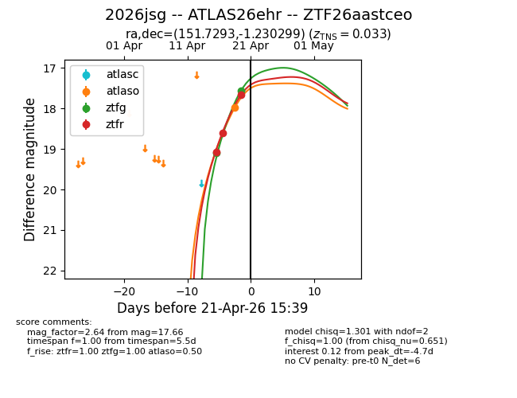
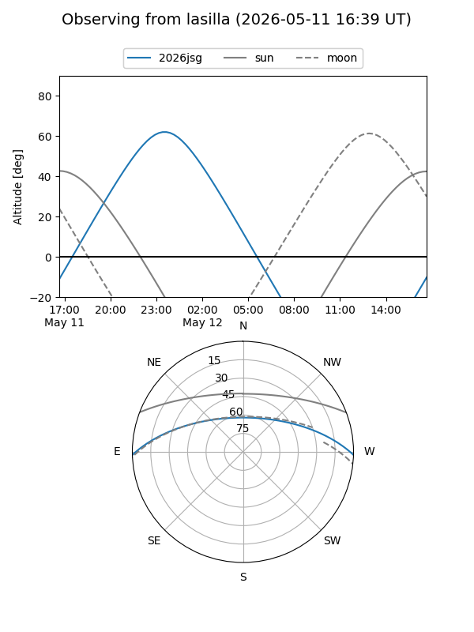
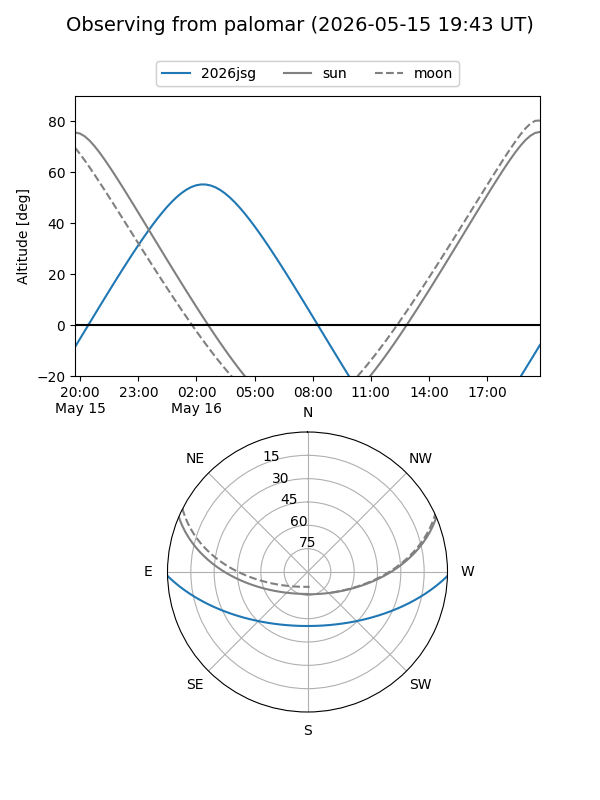
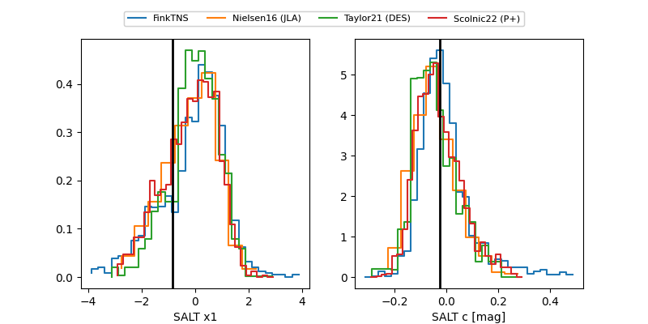

2026jsg
Target 2026jsg at 2026-04-21 15:43
Aliases and brokers:
FINK: link
Lasair: link
ALeRCE: link
TNS: link
YSE: link
alt names
ZTF26aastceo (ztf,fink_ztf)
2026jsg (tns,yse)
ATLAS26ehr (atlas)
Coordinates:
equatorial (ra, dec) = 151.7293,-1.23030
equatorial (HMS+DMS) = 10:06:55.02,-01:13:49.08
galactic (l, b) = (241.7957,+41.33105)
Flags:
confirmed ia
Photometry:
last atlaso=17.97, ztfg=17.56, ztfr=17.66
1 atlaso, 2 ztfg, 3 ztfr detections
Lightcurve

Visibility


Additional plots
